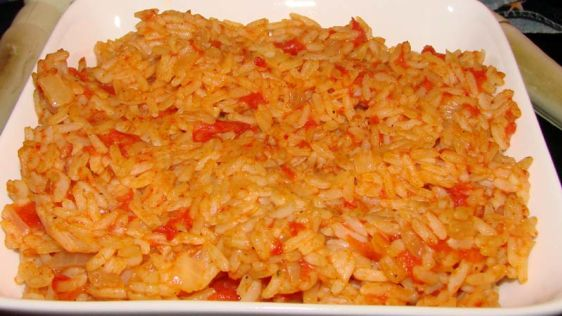

Tomato Rice

Description
An easy, warm and cozy recipe, all in one pot.
Ingredients
- 1 onion, chopped
- 1 garlic clove, chopped
- 2 tablespoons olive oil
- 1 cup converted rice
- 1 1⁄2 cups chicken broth
- 1 cup crushed tomatoes
- salt and pepper
Instructions
- In a large saucepan over medium heat, soften the onion and garlic in the oil.
- Add the rice and stir to coat the grains with oil
- Add the broth and tomatoes
- Season with salt and pepper
- Bring to a boil, lower the heat, cover and simmer until cooked about 25 minutes.